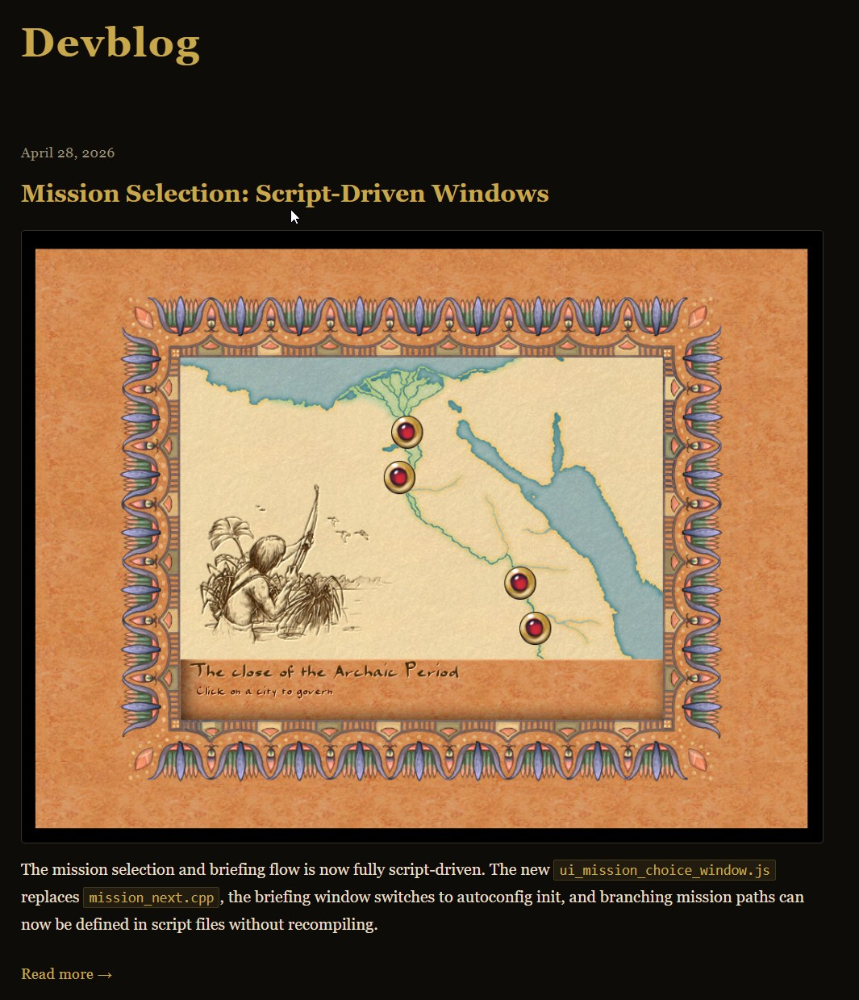

Gli sviluppatori di giochi hanno una malattia professionale piuttosto strana: dopo una giornata di lavoro passata su ticket e codice, hai voglia di aprire il portatile e scrivere di nuovo codice, solo che ora «per te stesso». La maggior parte dei miei colleghi di mestiere, tornata a casa, dedica un'ora o più a lavorare sul proprio motore, o a riscrivere/moddare un gioco preferito/vecchio/nuovo/altro (sottolineare la voce pertinente), o a costruire qualche libreria, o a sistemare un tool che dà fastidio a tutti. Non so — forse è contagioso e gira per gli studi, o forse è solo un pezzo dell'atmosfera creativa che ti porti fuori dall'ufficio, e vive per un po' fuori da quello spazio.
Capita spesso che un piccolo progetto pensato per «un paio di serate» si trasformi all'improvviso in diversi anni della tua vita. L'ho visto molte volte da fuori e da dentro: CorsixTH, 0AD, Akhenaten, Cytopia, StoneKingdoms (altri giochi open source qui) — progetti molto diversi (tra quelli a cui ho contribuito), ma mostrano tutti chiaramente una sola e medesima cosa: un pet project non resta quasi mai «solo una piccola cosa». O muore, oppure comincia a esigere dal suo autore un atteggiamento da adulto e si trascina dietro architettura, manutenzione, documentazione, comunicazione con i pari e con le persone che semplicemente giocano, il triage dei bug, i rilasci e spiacevoli compromessi.
E la domanda principale qui non è «come trovare la motivazione» ma: ti serve davvero questo?
Con i giochi e i tool c'è una regola che può risparmiarti più di un giorno della tua vita: se puoi non farlo, meglio non farlo. Forse suona demotivante, ma almeno è onesto. Un pet project nel gamedev finisce raramente al primo prototipo, e persino una piccola libreria si trascina dietro test su compilatori diversi, esempi, un README, un issue tracker, le aspettative degli utenti. E se è un motore, un editor, o la ricostruzione di un vecchio gioco, la scala diventa in fretta «industriale», più o meno.
Akhenaten (Pharaoh 1999©) è esattamente una di quelle storie per me. E mentre in superficie, o su Discord, potrebbe sembrare «beh, prendiamo un vecchio gioco e ripristiniamo/reimmaginiamo il suo comportamento», in realtà ti scontri con qualcosa di più del semplice codice vecchio. Il codice si può scrivere e cambiare, ma capire la vecchia logica, riprodurre le sensazioni, e allo stesso tempo non rovinare le abitudini dei giocatori, avere a che fare con i dati, la UI, la simulazione, il pathfinding e i suoi bug — questo è oh-quanto-non-semplice. Non menziono nemmeno i salvataggi e le mille-mila piccole regole che non sono documentate come si deve da nessuna parte, così che ogni meccanica «semplice» si rivela un groviglio di dipendenze, metà delle quali ricordi in modo diverso dagli altri. Ecco com'erano i vecchi giochi.
Una motivazione debole non sopravvive qui, e «voglio farlo per il mio portfolio», «voglio capire come funzionano i motori», «voglio la mia Unity, solo più semplice» possono essere buoni impulsi iniziali, ma... ma sono un carburante scadente per un progetto pluriennale.
Ciò che funziona molto meglio qui è «questa cosa mi manca», «voglio che questo vecchio gioco viva», «sono curioso di testare la mia idea», «voglio fare un piccolo tool che si possa incorporare ovunque».
A proposito di un piccolo tool: imspinner è nato dopo che mi fu commissionato di fare alcune animazioni di caricamento non standard in C++ — semplicemente qualcuno aveva quel desiderio. Non era un tentativo di costruire un game framework, né un framework in generale; è solo una cosa piccola, comprensibile, incorporabile per Dear ImGui sotto forma di un insieme di indicatori di caricamento. Ha un piccolo confine di responsabilità, e puoi capirlo, usarlo, estenderlo, e non trascinarti dietro mezzo mondo.
Un pet project e imparare non sono la stessa cosa
I pet project sono spesso giustificati con l'apprendimento, del tipo «scriverò il mio motore per capire le cose». Questo non funziona. Scrivere un motore nello specifico — non funziona. Su circa un migliaio dei miei contatti nel gamedev, solo due persone hanno scritto un game engine fino allo stato di «lo puoi mostrare e ci puoi smanettare» (zenkovich e il suo o2) e (tinaynox con Melted Kingdoms — aggiungilo alla tua wishlist, Dima mi ha promesso un paio di birre per la pubblicità).
Due persone su più di mille, meno di un decimo di percento, ed è il solito rapporto tra pet project iniziati e portati «a una fase funzionante». Il problema qui non è capire le cose, è che se scrivi un intero gioco, spenderai inevitabilmente più tempo nelle aree in cui ti senti già sicuro. Il programmatore rifinirà architettura e codice, l'artista andrà sul visivo, il game designer scaverà nelle meccaniche, mentre i punti deboli resteranno «per dopo»: tooling, UI, build, test, la content pipeline, la documentazione, e così via.
Nel campo dell'open source questo si vede benissimo. Quello stesso Cytopia come city-builder è appassito, perché un paio di programmatori forti sono stati spremuti fuori dal progetto (non io — io ho solo aiutato ai margini, ma ho comunque dovuto leggere tutta quella follia nelle chat), e poi anche l'autore del progetto, e di nuovi non ne sono mai arrivati. Il lato tecnico ha ceduto e ha trascinato giù tutto lo sviluppo. Non basta scrivere il codice; un'altra persona deve essere in grado di compilare il progetto in almeno dieci passaggi usando una documentazione in qualche modo leggibile, e meglio ancora essere in grado di capire la struttura, proporre una modifica, e non rompere il lavoro di qualcun altro nel farlo. E, avendolo rotto — non perdere interesse per il progetto dopo le prime review.
StoneKingdoms/Augustus/Akhenaten/OpenTTD/OpenAge mostrano l'altro lato dello sviluppo. Quando lavori con l'eredità dei vecchi giochi, l'apprendimento molto spesso va, diciamo così, non secondo gli standard moderni, e devi studiare formati antichi, comportamenti, tool, i limiti dell'originale, e le aspettative della community. Questo assomiglia poco a «un corso di game-dev, scriveremo Crysis in dieci giorni», e più ad archeologia del codice mescolata con crutch engineering e allenamento dell'intuito.
Per imparare — se vuoi specificamente imparare — invece di un grande pet project è più utile prendere un piccolo argomento e studiarlo separatamente: serializzazione, ECS, layout della UI, navigazione, hot reload, localizzazione, profiling. Ma i piccoli esercizi hanno un rovescio della medaglia: danno raramente la sensazione di un progetto finito e lo «scoppio di ormoni della gioia» che compaiono in un progetto vivo.
Non ogni progetto deve diventare grande
Oppure un motore... I nuovi arrivati che entrano nello sviluppo ora vedono il panorama del gamedev dalle spalle di giganti come Unreal/Unity/Godot/Defold e di compagni più piccoli costruttori di motori. E cominciano a pensare in grandi categorie: gioco, motore, editor, meccaniche, NPC. Tutti lo fanno senza eccezione, che ci vuoi fare... ci siamo abituati in fretta alle cose belle. Ma tra queste pennellate ampie c'è un enorme strato di piccoli tool e librerie, la cui conoscenza si rivela più utile della conoscenza di un motore nel suo insieme.
Le piccole librerie sono buone perché ti costringono a pensare ai confini. Cosa fa il progetto? Cosa fondamentalmente non fa? Come lo colleghi? Puoi usarne solo una parte? Quanto dipende dallo stack di qualcun altro?
Molti pet project di giochi soffrono del desiderio di diventare immediatamente un framework o un motore. L'autore comincia con una piccola funzione utile, e un mese dopo sta già progettando un sistema di plugin, un editor, il proprio formato di asset, e un piano per «un giorno agganciare gli script». A volte questo è giustificato, ma una piccola libreria con un'API chiara ha una migliore possibilità di sopravvivenza rispetto a un ambizioso tuttofare senza utenti, che si unisce al cimitero dei tuttofare su GitHub.
I remake dei vecchi giochi sono in una posizione particolare qui, perché poggiano su conoscenze specifiche e sulla memoria dei giocatori. Non puoi semplicemente sostituirli con un sistema generico e dire che è migliorato, perché i giocatori sentono i dettagli e ricordano le loro impressioni — come il ritmo della simulazione o la reattività dell'interfaccia, le stranezze del pathfinding, i bug di bilanciamento, o altri limiti. E qui il tuo motore non è più un difetto o over-engineering, ma parte dello spirito del vecchio gioco: semplicemente non riuscirai a riprodurre tutto questo su Unreal, per quanto ti sforzi.
Il C++ rimane un linguaggio importante per il gamedev (e il C++17 è uno standard assolutamente solidissimo), specialmente dove ti servono prestazioni, controllo della memoria e integrazione con codice e piattaforme esistenti, ma per i progetti hobbistici ha un costo, e quel costo è abbastanza grande da respingere la maggior parte dei nuovi arrivati.
Molto tempo va non nell'idea del progetto o del gioco, ma nell'infrastruttura attorno al linguaggio: build, ABI, template, dipendenze, differenze tra piattaforme, reflection, binding, generazione di codice, e il debug di strani errori. Se un progetto ha bisogno di proprietà, eventi, serializzazione, inspector dell'editor, o scripting, cominci in fretta a costruire il tuo piccolo linguaggio sopra il C++.
Nel lavoro e nei grandi progetti il C++ è giustificato; in un progetto casalingo raramente, o solo se il C++ è l'unica cosa che conosci. E se l'obiettivo del progetto non è esplorare il C++ in quanto tale ma fare un gioco o un tool, allora metti semplicemente il codice in C++ e spingilo verso il tuo framework preferito — sarà più utile e più veloce. È strano che dopo 20 anni a programmare in C++ non sia più sicuro che sia un vantaggio nello sviluppo, piuttosto solo un'abitudine.
Allo stesso tempo, le piccole librerie C++ possono comunque essere un formato eccellente: quello stesso imspinner ha attecchito nella community proprio perché non cerca di coprire tutta la UI né di rivendicare l'ecosistema di Dear ImGui, ma lo completa semplicemente con qualcosa di utile e risolve un compito chiaro.
L'open source aggiunge un altro gioco sopra il gioco
Quando un progetto è aperto, ottieni non solo codice ma anche persone. E anche issue, pull request, aspettative, domande, fork, persone a caso che si fanno vive una volta all'anno e chiedono perché qualcosa non compila, e si offendono se non rispondi. Spesso un paio di buone issue o una pull request ripristinano la motivazione meglio di qualsiasi disciplina interna.
Ma l'open source si trasforma facilmente in supporto non pagato, specialmente se il progetto sembra «quasi pronto» mentre gli utenti hanno già aspettative da prodotto. Il gamedev open source non è solo «scriviamo un gioco insieme», è un secondo lavoro. E anche lì devi prendere decisioni, assegnare compiti, riscrivere sistemi, e spiegare ai nuovi arrivati cos'è un piccolo compito e in quale palude architetturale è meglio non addentrarsi ancora.
Nei progetti solitari è più facile prendere decisioni, ma appena compare anche una piccola squadra, compare la comunicazione, e serve molto tempo specificamente per parlare. Dopo diverse storie del genere, apprezzo sempre più i progetti con confini «onesti», chiamiamoli così.
Non devi fare un gioco se puoi fare un tool per i giochi. Non devi fare un motore se puoi fare una libreria. Non devi... ci sono molte più ragioni per cui NON...
Meglio metterla così: un pet project vive più a lungo quando dietro di esso non sta il desiderio di capire le cose o di costruire un portfolio, ma una mancanza concreta — qualcosa che manca a te stesso e che sei pronto a usare, e meglio ancora quando c'è un piccolo gruppo di persone vicine con gli stessi interessi e il progetto può essere reso utile non solo per te. Ma una volta che diventa utile a qualcuno, diventa anche un secondo lavoro, dove motivazione, scala e interesse personale saranno l'unica ricompensa.
Se il progetto non ti molla — fallo, ma è meglio scegliere in anticipo una forma in cui possa vivere a lungo, perché ogni hobby si rivela sempre più grande di quanto sembri la prima sera.
P.S. Se qualcuno è interessato al city-building dell'antico Egitto, ho avviato un devblog dove pubblico le modifiche del gioco e semplicemente articoli interessanti.

← Tutti gli articoli